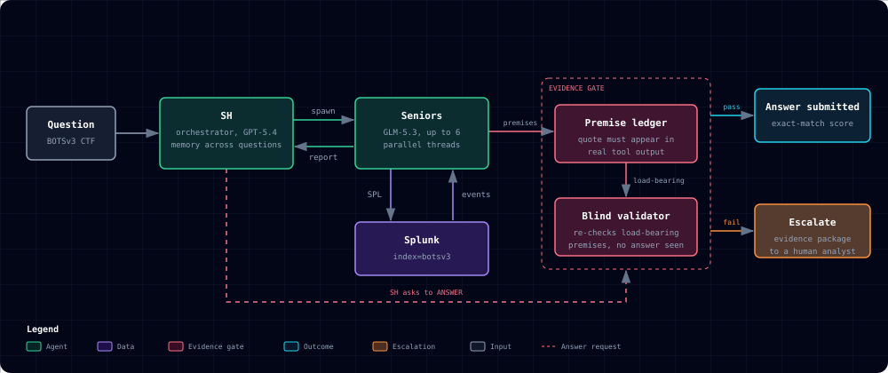

Diagram comparison
The same architecture drawn two ways. Both say that an answer is submitted only when the evidence gate passes and that anything else goes to a person. The README currently uses B.
A. artifact-diagramming skill
Six nodes, one flow, animated, follows the page theme

- A dot travels each outcome path; motion stops for reduced-motion users
- Light and dark variants inside the image
- Splunk folded into the Seniors box
- Companion page: click-through walkthrough with file references
B. Cocoon-AI architecture-diagram skill
Seven nodes, dark theme, static, semantic colours and a legend

- Colour carries meaning: agents, data, evidence gate, outcome, escalation
- Splunk shown as its own data node, with the SPL and events arrows
- Full page adds three summary cards and PNG or PDF export
- Static image; the monospace font falls back to the viewer's own in the README